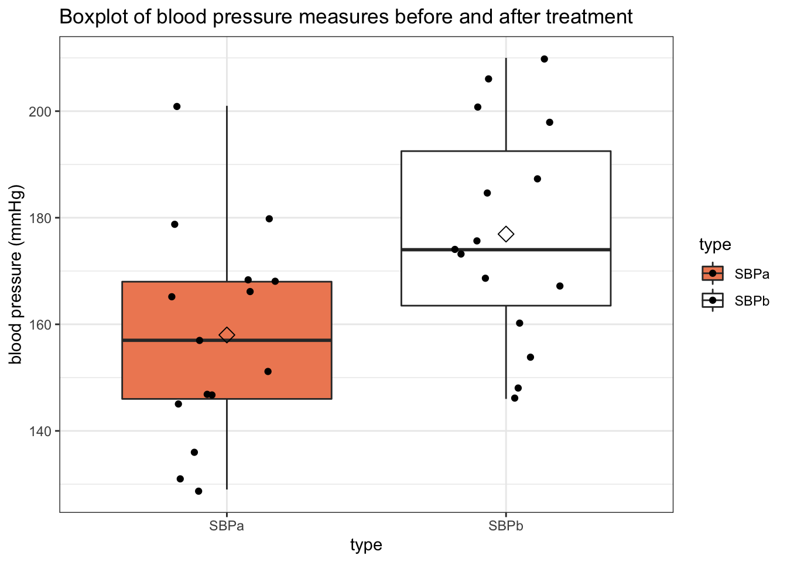
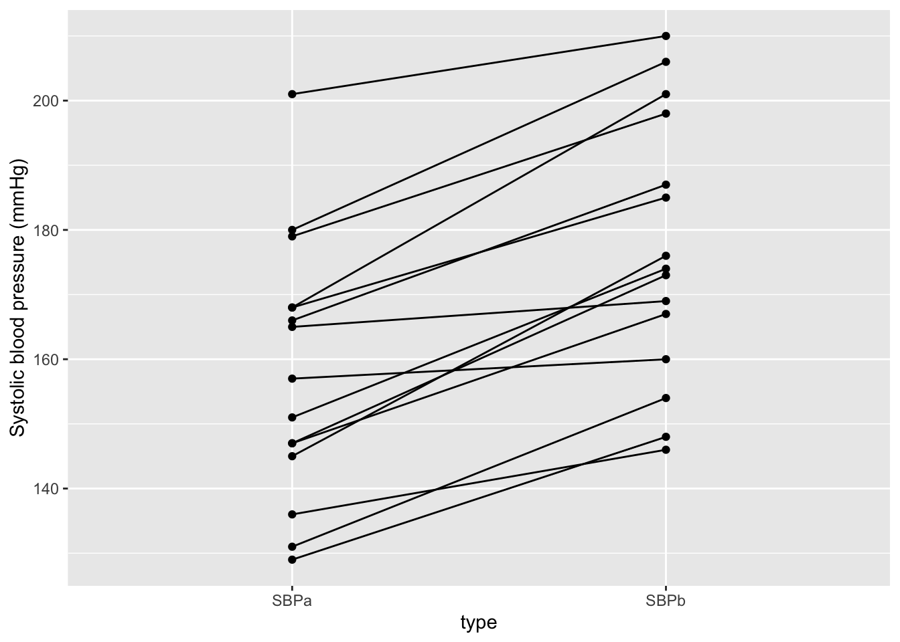
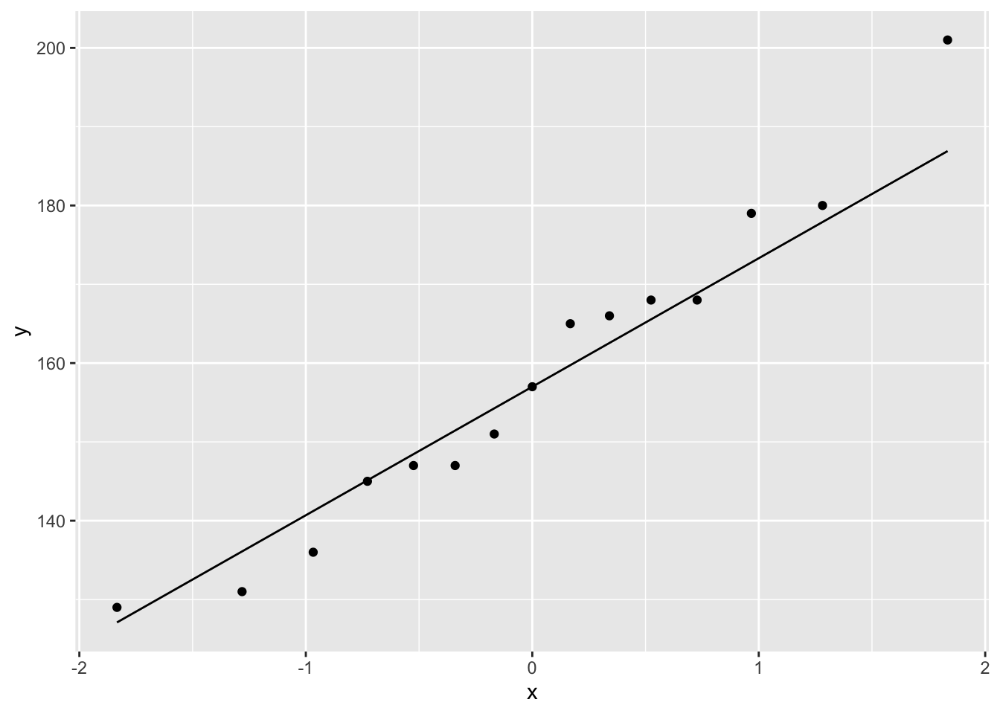
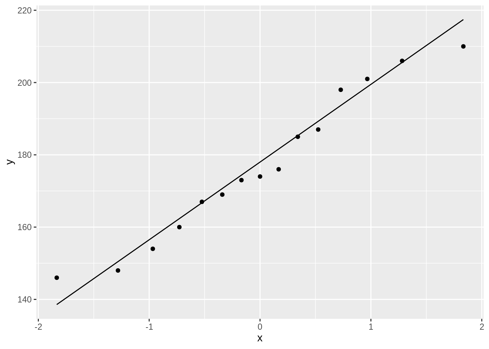
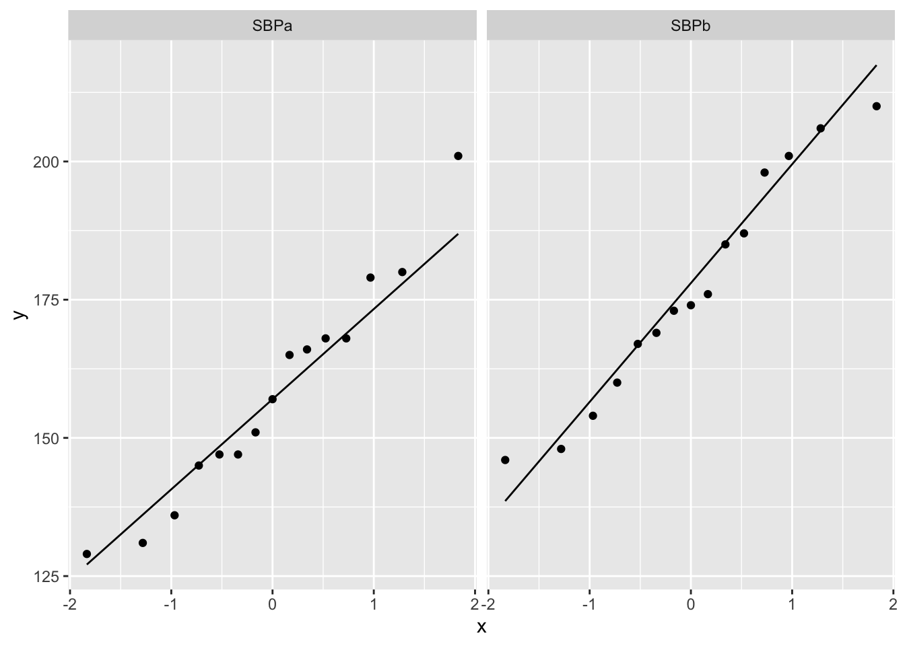
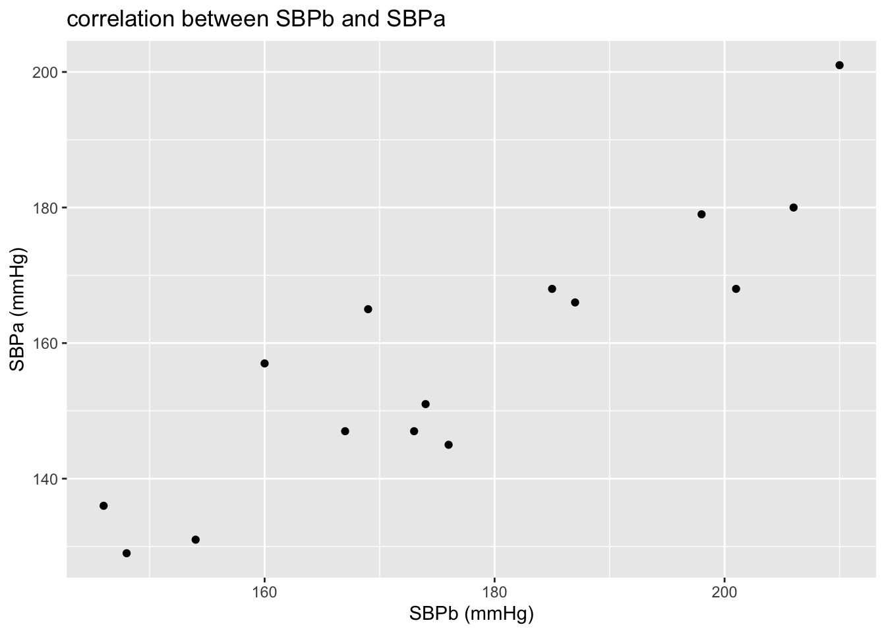
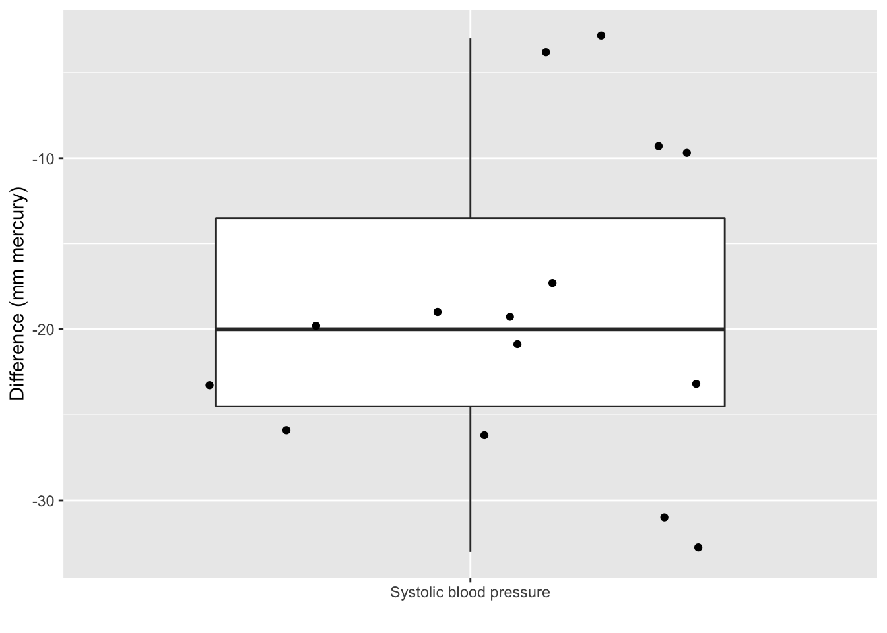

In this exercise, we will see some basics in hypothesis testing and more specifically on t-tests. As an example, we will work with the captopril dataset that we already explored in the exercise on data exploration.
The goal is to answer these two research questions;
Is the average systolic baseline blood pressure of the patients is higher than the treshold for hypertension of 140 mmHg?
Is the average SBP before captopril treatment different from the average SBP after captopril treatment?
First, load the required R libraries:
Import the data
(captopril <- read.table("https://raw.githubusercontent.com/statOmics/PSLS21/data/captopril.txt",
header = TRUE,
sep = ","))
Data exploration
Before we start delving into the data in order to solve our research hypothesis, we have to explore our data. Our dataset looks like this;
We have 15 patients, for which the systolic blood pressures and diastolyic blood pressures were measured, before and after treatment with the captopril drug.
Note, that the dataset is not in the tidy format. We could tidy the data using the following code.
captopril %>%
gather(type,bp,-id) %>%
filter(type%in%c("SBPa","SBPb")) %>%
mutate(id = as.factor(id))
# we are only interested in the systolic blood pressure
We can visualize the dataframe using boxplots;
captopril %>%
gather(type,bp,-id) %>%
filter(type%in%c("SBPa","SBPb")) %>%
ggplot(aes(x=type, y=bp, fill=type)) +
scale_fill_brewer(palette="RdGy") +
theme_bw() +
geom_boxplot(outlier.shape=NA) +
geom_jitter(width = 0.2) +
ggtitle("Boxplot of blood pressure measures before and after treatment") +
ylab("blood pressure (mmHg)") +
stat_summary(fun=mean, geom="point", shape=5, size=3, color="black", fill="black")

Clearly, it seems that on average the measurements after treatment are lower than those before treatment.
Note that the boxplot is useful in light of the first question where we have to assess if the average systolic blood pressure of patients is above 140mm Hg, the threshold for hypertension.
However, to assess the question if there is an affect of administering captopril it is essential to account for the fact that the blood pressure before and after administering captopril was measured on the same patients.
captopril %>%
gather(type,bp,-id) %>%
filter(type%in%c("SBPa","SBPb")) %>%
ggplot(aes(x=type, y=bp, group=id)) +
geom_line() +
geom_point() +
ylab("Systolic blood pressure (mmHg)")

The key question is to know is if there is significant effect of the treatment? To answer this question, we will need to perform a hypothesis test.
Let’s start of with question 1.
Question 1
Is the average baseline systolic blood pressure (SBP) higher than the threshold for hypertension of 140 mmHg?
To test the effect of the captopril on subjects with hypertension (patients), we need to select patients with hypertension, hence they should have elevated SBP levels, that are on average higher than 140 mmHg. We can assess this hypothesis using a one sample t-test.
Assess the assumptions
Before we can perform a t-test, we must check that the required assumptions are met!
- The observations are independent
- The data (SBPb) must be normally distributed
The first assumption requires us to think about how the data were collected. Are there any underlying correlation structures (that we know of) in the data? For instance, if all the 15 subjects are members of the same family, we expect that the data will give us a good representation of the underlying population of interest, i.e., all past, present and future patients with elevated SBP levels.
Here, we have no reason to believe that this assumption was violated; we may assume 15 unrelated patients with elevated SBP levels were selected at random from the population.
We can assess the second assumption with a quantile-quantile plot.
captopril %>%
ggplot(aes(sample=SBPa)) +
geom_qq() +
geom_qq_line()

captopril %>%
ggplot(aes(sample=SBPb)) +
geom_qq() +
geom_qq_line()

# or, equivalently
captoprilTidy <- captopril %>% gather(type,bp,-id)
captoprilTidy %>%
filter(type%in%c("SBPa","SBPb")) %>%
ggplot(aes(sample=bp)) +
geom_qq() +
geom_qq_line() +
facet_wrap(~type)

We can see that all of the data lies nicely around the quantile-quantile line (black line). As such, we may conclude that our data is normally distributed.
Hypothesis test
Here, we will test if mean systolic blood pressure at baseline is significantly higher than 140 mmHg. More specifically, we will test the null hypothesis;
\(H_0:\) the mean SBPb is equal to 140 mmHg
versus the alternative hypothesis;
\(H_1:\) the mean SBPb is greater than 140 mmHg
output1 <- t.test(captopril$SBPb,
mu=140,
alternative = "greater",
conf.level = 0.95)
output1
##
## One Sample t-test
##
## data: captopril$SBPb
## t = 6.9556, df = 14, p-value = 3.352e-06
## alternative hypothesis: true mean is greater than 140
## 95 percent confidence interval:
## 167.581 Inf
## sample estimates:
## mean of x
## 176.9333
Conclusion
When writing a conclusion on your research hypothesis, it is very important to be precise, concise, and complete.
An example of such a conclusion for our research question is given below:
We can conclude that the mean systolic baseline blood pressure of patients in the captopril study is extremely significantly higher than the threshold for hypertension of 140 mmHg (p << 0.001). The mean SBPb equals 176.93 mmHg with a 95% confidence interval of [167.58, 167.58, +\(\infty\)]).
As we have seen in the theory class, the 95% confidence interval can be interpreted as;
With 95% confidence we can conclude that the true average of baseline systolic blood pressure of diseased patients in the population is above 167.58.
Note, that we only report a one sided confidence interval because we only test against the alternative hypothesis that the blood pressure is on average larger than the threshold for hypertension of 140 mmHg.
Question 2
Is the average SBP before captopril treatment different from the average SBP after captopril treatment?
As the data are paired, there will be a strong correlation between the BP values before and after treatment of each individual patient. We can show this with a scatterplot.
captopril %>%
ggplot(aes(x=SBPb,y=SBPa)) +
geom_point() +
ggtitle("correlation between SBPb and SBPa") +
ylab("SBPa (mmHg)") +
xlab("SBPb (mmHg)")

We clearly see that if a patient’s SBPb value is high, its SBPa value will be comparatively high as well.
We can immediately calculate the impact of the treatment for every patient by calculating the difference between the blood pressure after and before the treatment.
captopril <-
captopril %>% mutate(deltaSBP = SBPa-SBPb)
captopril%>%
ggplot(aes(x="Systolic blood pressure",y=deltaSBP)) +
geom_boxplot(outlier.shape=NA) +
geom_point(position="jitter")+
ylab("Difference (mm mercury)") +
xlab("")

Check the assumptions
The paired t-test has 2 assumptions:
The blood pressure differences are independent of each other.
The blood pressure differences are normally distributed.
The first assumption is met given the experimental design.
Secondly, we assess if the data are normally distributed.
captopril %>%
ggplot(aes(sample=deltaSBP)) +
geom_qq() +
geom_qq_line()

We can see that all of the data lies nicely around the quantile-quantile line. As such, we may assume that our data are normally distributed. As our assumptions are met we may continue with performing the unpaired t-test.
Hypothesis test
As such, we will perform a paired t-test.
- The null hypothesis of the test is that the blood pressure before and after the treatment with captopril is on average equal.
- Which will be tested against the alternative that the blood pressure before and after the treatment with captopril is on average different.
output2 <- t.test(captopril$SBPb, captopril$SBPa, paired = TRUE)
output2
##
## Paired t-test
##
## data: captopril$SBPb and captopril$SBPa
## t = 8.1228, df = 14, p-value = 1.146e-06
## alternative hypothesis: true difference in means is not equal to 0
## 95 percent confidence interval:
## 13.93409 23.93258
## sample estimates:
## mean of the differences
## 18.93333
Conclusion
There is on average an extremely significant blood pressure drop upon administering captopril to patients with hypertension (p << 0.001). The systolic blood pressure decreases on average with 18.9 mmHg upon the treatment with captopril (95% CI [13.9, 23.9]).
Alternative solution: One-sample t-test on the difference
Performing a paired t-test is analogous to performing a one-sample t-test on the difference between both groups.
This can be easily seen from the output of the paired two-sample t-test. The alternative hypothesis \(HA\) there states that the “true difference in means is not equal to 0”. So internally, R will actually perform a one-sample t-test on the difference, and check whether or not the true mean difference is equal to 0. We can also set this up manually.
t.test(captopril$deltaSBP, mu=0)
##
## One Sample t-test
##
## data: captopril$deltaSBP
## t = -8.1228, df = 14, p-value = 1.146e-06
## alternative hypothesis: true mean is not equal to 0
## 95 percent confidence interval:
## -23.93258 -13.93409
## sample estimates:
## mean of x
## -18.93333
Indeed, the output is equivalent to that of the paired t-test.
LS0tCnRpdGxlOiAiRXhlcmNpc2UgNS4xOiBIeXBvdGhlc2lzIHRlc3Rpbmcgb24gdGhlIGNhcHRvcHJpbCBkYXRhc2V0IC0gc29sdXRpb24iCmF1dGhvcjogIkxpZXZlbiBDbGVtZW50IGFuZCBKZXJvZW4gR2lsaXMiCmRhdGU6ICJzdGF0T21pY3MsIEdoZW50IFVuaXZlcnNpdHkgKGh0dHBzOi8vc3RhdG9taWNzLmdpdGh1Yi5pbykiCm91dHB1dDoKICAgIGh0bWxfZG9jdW1lbnQ6CiAgICAgIGNvZGVfZG93bmxvYWQ6IHRydWUKICAgICAgdGhlbWU6IGNvc21vCiAgICAgIHRvYzogdHJ1ZQogICAgICB0b2NfZmxvYXQ6IHRydWUKICAgICAgaGlnaGxpZ2h0OiB0YW5nbwogICAgICBudW1iZXJfc2VjdGlvbnM6IHRydWUKLS0tCgpJbiB0aGlzIGV4ZXJjaXNlLCB3ZSB3aWxsIHNlZSBzb21lIGJhc2ljcyBpbiBoeXBvdGhlc2lzIHRlc3RpbmcgYW5kIG1vcmUKc3BlY2lmaWNhbGx5IG9uIHQtdGVzdHMuIEFzIGFuIGV4YW1wbGUsIHdlIHdpbGwgd29yayB3aXRoIHRoZQpjYXB0b3ByaWwgZGF0YXNldCB0aGF0IHdlIGFscmVhZHkgZXhwbG9yZWQgaW4gdGhlIGV4ZXJjaXNlIG9uIGRhdGEgZXhwbG9yYXRpb24uCgpUaGUgZ29hbCBpcyB0byBhbnN3ZXIgdGhlc2UgdHdvIHJlc2VhcmNoIHF1ZXN0aW9uczsKCjEuIElzIHRoZSBhdmVyYWdlIHN5c3RvbGljIGJhc2VsaW5lIGJsb29kIHByZXNzdXJlIG9mIHRoZSBwYXRpZW50cyBpcyBoaWdoZXIgdGhhbiB0aGUgdHJlc2hvbGQgZm9yIGh5cGVydGVuc2lvbiBvZiAxNDAgbW1IZz8KCjIuIElzIHRoZSBhdmVyYWdlIFNCUCBiZWZvcmUgY2FwdG9wcmlsIHRyZWF0bWVudApkaWZmZXJlbnQgZnJvbSB0aGUgYXZlcmFnZSBTQlAgYWZ0ZXIKY2FwdG9wcmlsIHRyZWF0bWVudD8KCkZpcnN0LCBsb2FkIHRoZSByZXF1aXJlZCBSIGxpYnJhcmllczoKCmBgYHtyLCBtZXNzYWdlPUZBTFNFLCB3YXJuaW5nPUZBTFNFfQpsaWJyYXJ5KHRpZHl2ZXJzZSkKYGBgCgojIEltcG9ydCB0aGUgZGF0YQoKYGBge3J9CihjYXB0b3ByaWwgPC0gcmVhZC50YWJsZSgiaHR0cHM6Ly9yYXcuZ2l0aHVidXNlcmNvbnRlbnQuY29tL3N0YXRPbWljcy9QU0xTMjEvZGF0YS9jYXB0b3ByaWwudHh0IiwKICAgICAgICAgICAgICAgICAgICAgICAgIGhlYWRlciA9IFRSVUUsCiAgICAgICAgICAgICAgICAgICAgICAgICBzZXAgPSAiLCIpKQpgYGAKCiMgRGF0YSBleHBsb3JhdGlvbgoKQmVmb3JlIHdlIHN0YXJ0IGRlbHZpbmcgaW50byB0aGUgZGF0YSBpbiBvcmRlciB0byBzb2x2ZQpvdXIgcmVzZWFyY2ggaHlwb3RoZXNpcywgd2UgaGF2ZSB0byBleHBsb3JlIG91ciBkYXRhLiBPdXIgZGF0YXNldCBsb29rcyBsaWtlIHRoaXM7CgpgYGB7cn0KaGVhZChjYXB0b3ByaWwpCmBgYAoKV2UgaGF2ZSAxNSBwYXRpZW50cywgZm9yIHdoaWNoIHRoZSBzeXN0b2xpYwpibG9vZCBwcmVzc3VyZXMgYW5kIGRpYXN0b2x5aWMgYmxvb2QgcHJlc3N1cmVzIHdlcmUgbWVhc3VyZWQsIGJlZm9yZSBhbmQgYWZ0ZXIKdHJlYXRtZW50IHdpdGggdGhlIGNhcHRvcHJpbCBkcnVnLgoKTm90ZSwgdGhhdCB0aGUgZGF0YXNldCBpcyBub3QgaW4gdGhlIHRpZHkgZm9ybWF0LiBXZSBjb3VsZCB0aWR5IHRoZSBkYXRhIHVzaW5nCnRoZSBmb2xsb3dpbmcgY29kZS4KCmBgYHtyfQpjYXB0b3ByaWwgJT4lCiAgICBnYXRoZXIodHlwZSxicCwtaWQpICU+JQogICAgZmlsdGVyKHR5cGUlaW4lYygiU0JQYSIsIlNCUGIiKSkgJT4lCiAgICBtdXRhdGUoaWQgPSBhcy5mYWN0b3IoaWQpKQogICAgIyB3ZSBhcmUgb25seSBpbnRlcmVzdGVkIGluIHRoZSBzeXN0b2xpYyBibG9vZCBwcmVzc3VyZQpgYGAKCldlIGNhbiB2aXN1YWxpemUgdGhlIGRhdGFmcmFtZSB1c2luZyBib3hwbG90czsKCmBgYHtyfQpjYXB0b3ByaWwgJT4lCiAgZ2F0aGVyKHR5cGUsYnAsLWlkKSAlPiUKICBmaWx0ZXIodHlwZSVpbiVjKCJTQlBhIiwiU0JQYiIpKSAlPiUKICBnZ3Bsb3QoYWVzKHg9dHlwZSwgeT1icCwgZmlsbD10eXBlKSkgKwogICAgICBzY2FsZV9maWxsX2JyZXdlcihwYWxldHRlPSJSZEd5IikgKwogICAgICB0aGVtZV9idygpICsKICAgICAgZ2VvbV9ib3hwbG90KG91dGxpZXIuc2hhcGU9TkEpICsKICAgICAgZ2VvbV9qaXR0ZXIod2lkdGggPSAwLjIpICsKICAgICAgZ2d0aXRsZSgiQm94cGxvdCBvZiBibG9vZCBwcmVzc3VyZSBtZWFzdXJlcyBiZWZvcmUgYW5kIGFmdGVyIHRyZWF0bWVudCIpICsKICAgICAgeWxhYigiYmxvb2QgcHJlc3N1cmUgKG1tSGcpIikgKwogICAgICBzdGF0X3N1bW1hcnkoZnVuPW1lYW4sIGdlb209InBvaW50Iiwgc2hhcGU9NSwgc2l6ZT0zLCBjb2xvcj0iYmxhY2siLCBmaWxsPSJibGFjayIpCmBgYAoKQ2xlYXJseSwgaXQgc2VlbXMgdGhhdCBvbiBhdmVyYWdlIHRoZSBtZWFzdXJlbWVudHMKYWZ0ZXIgdHJlYXRtZW50IGFyZSBsb3dlciB0aGFuIHRob3NlIGJlZm9yZSB0cmVhdG1lbnQuCgpOb3RlIHRoYXQgdGhlIGJveHBsb3QgaXMgdXNlZnVsIGluIGxpZ2h0IG9mIHRoZSBmaXJzdCBxdWVzdGlvbiB3aGVyZSB3ZSBoYXZlIHRvIGFzc2VzcyBpZiB0aGUgYXZlcmFnZSBzeXN0b2xpYyBibG9vZCBwcmVzc3VyZSBvZiBwYXRpZW50cyBpcyBhYm92ZSAxNDBtbSBIZywgdGhlIHRocmVzaG9sZCBmb3IgaHlwZXJ0ZW5zaW9uLgoKSG93ZXZlciwgdG8gYXNzZXNzIHRoZSBxdWVzdGlvbiBpZiB0aGVyZSBpcyBhbiBhZmZlY3Qgb2YgYWRtaW5pc3RlcmluZyBjYXB0b3ByaWwgaXQgaXMgZXNzZW50aWFsIHRvIGFjY291bnQgZm9yIHRoZSBmYWN0IHRoYXQgdGhlIGJsb29kIHByZXNzdXJlIGJlZm9yZSBhbmQgYWZ0ZXIgYWRtaW5pc3RlcmluZyBjYXB0b3ByaWwgd2FzIG1lYXN1cmVkIG9uIHRoZSBzYW1lIHBhdGllbnRzLgoKYGBge3J9CmNhcHRvcHJpbCAlPiUKICBnYXRoZXIodHlwZSxicCwtaWQpICU+JQogIGZpbHRlcih0eXBlJWluJWMoIlNCUGEiLCJTQlBiIikpICU+JQogIGdncGxvdChhZXMoeD10eXBlLCB5PWJwLCBncm91cD1pZCkpICsKICBnZW9tX2xpbmUoKSArCiAgZ2VvbV9wb2ludCgpICsKICB5bGFiKCJTeXN0b2xpYyBibG9vZCBwcmVzc3VyZSAobW1IZykiKQpgYGAKClRoZSBrZXkgcXVlc3Rpb24gaXMgdG8ga25vdyBpcyBpZiB0aGVyZSBpcyAqKnNpZ25pZmljYW50KiogZWZmZWN0IG9mIHRoZSB0cmVhdG1lbnQ/IFRvIGFuc3dlciB0aGlzCnF1ZXN0aW9uLCB3ZSB3aWxsIG5lZWQgdG8gcGVyZm9ybSBhIGh5cG90aGVzaXMgdGVzdC4KCkxldCdzIHN0YXJ0IG9mIHdpdGggcXVlc3Rpb24gMS4KCiMgUXVlc3Rpb24gMQoKSXMgdGhlIGF2ZXJhZ2UgYmFzZWxpbmUgc3lzdG9saWMgYmxvb2QgcHJlc3N1cmUgKFNCUCkgaGlnaGVyIHRoYW4gdGhlIHRocmVzaG9sZCBmb3IgaHlwZXJ0ZW5zaW9uIG9mIDE0MCBtbUhnPwoKVG8gdGVzdCB0aGUgZWZmZWN0IG9mIHRoZSBjYXB0b3ByaWwgb24gc3ViamVjdHMgd2l0aCBoeXBlcnRlbnNpb24KKHBhdGllbnRzKSwgd2UgbmVlZCB0byBzZWxlY3QgcGF0aWVudHMgd2l0aCBoeXBlcnRlbnNpb24sIGhlbmNlIHRoZXkgc2hvdWxkIGhhdmUKZWxldmF0ZWQgU0JQIGxldmVscywgdGhhdCBhcmUgb24gYXZlcmFnZSBoaWdoZXIgdGhhbiAxNDAgbW1IZy4KV2UgY2FuIGFzc2VzcyB0aGlzIGh5cG90aGVzaXMgdXNpbmcgYSBvbmUgc2FtcGxlIHQtdGVzdC4KCiMjIEFzc2VzcyB0aGUgYXNzdW1wdGlvbnMKCkJlZm9yZSB3ZSBjYW4gcGVyZm9ybSBhIHQtdGVzdCwgd2UgbXVzdCBjaGVjayB0aGF0IHRoZSByZXF1aXJlZAphc3N1bXB0aW9ucyBhcmUgbWV0IQoKMS4gVGhlIG9ic2VydmF0aW9ucyBhcmUgaW5kZXBlbmRlbnQKMi4gVGhlIGRhdGEgKFNCUGIpIG11c3QgYmUgbm9ybWFsbHkgZGlzdHJpYnV0ZWQKClRoZSBmaXJzdCBhc3N1bXB0aW9uIHJlcXVpcmVzIHVzIHRvIHRoaW5rIGFib3V0IGhvdyB0aGUgZGF0YSB3ZXJlIGNvbGxlY3RlZC4KQXJlIHRoZXJlIGFueSB1bmRlcmx5aW5nIGNvcnJlbGF0aW9uIHN0cnVjdHVyZXMgKHRoYXQgd2Uga25vdyBvZikKaW4gdGhlIGRhdGE/IEZvciBpbnN0YW5jZSwgaWYgYWxsIHRoZSAxNSBzdWJqZWN0cyBhcmUgbWVtYmVycyBvZgp0aGUgc2FtZSBmYW1pbHksIHdlIGV4cGVjdCB0aGF0IHRoZSBkYXRhIHdpbGwgZ2l2ZSB1cyBhIGdvb2QKcmVwcmVzZW50YXRpb24gb2YgdGhlIHVuZGVybHlpbmcgcG9wdWxhdGlvbiBvZiBpbnRlcmVzdCwgaS5lLiwKYWxsIHBhc3QsIHByZXNlbnQgYW5kIGZ1dHVyZSBwYXRpZW50cyB3aXRoIGVsZXZhdGVkIFNCUCBsZXZlbHMuCgpIZXJlLCB3ZSBoYXZlIG5vIHJlYXNvbiB0byBiZWxpZXZlIHRoYXQgdGhpcwphc3N1bXB0aW9uIHdhcyB2aW9sYXRlZDsgd2UgbWF5IGFzc3VtZSAxNSB1bnJlbGF0ZWQgcGF0aWVudHMgd2l0aCBlbGV2YXRlZCBTQlAgbGV2ZWxzIHdlcmUgc2VsZWN0ZWQgYXQgcmFuZG9tIGZyb20gdGhlIHBvcHVsYXRpb24uCgpXZSBjYW4gYXNzZXNzIHRoZSBzZWNvbmQgYXNzdW1wdGlvbiB3aXRoIGEgcXVhbnRpbGUtcXVhbnRpbGUgcGxvdC4KCmBgYHtyfQpjYXB0b3ByaWwgJT4lCiAgZ2dwbG90KGFlcyhzYW1wbGU9U0JQYSkpICsKICBnZW9tX3FxKCkgKwogIGdlb21fcXFfbGluZSgpCgpjYXB0b3ByaWwgJT4lCiAgZ2dwbG90KGFlcyhzYW1wbGU9U0JQYikpICsKICBnZW9tX3FxKCkgKwogIGdlb21fcXFfbGluZSgpCgojIG9yLCBlcXVpdmFsZW50bHkKY2FwdG9wcmlsVGlkeSA8LSBjYXB0b3ByaWwgJT4lIGdhdGhlcih0eXBlLGJwLC1pZCkKY2FwdG9wcmlsVGlkeSAlPiUKICBmaWx0ZXIodHlwZSVpbiVjKCJTQlBhIiwiU0JQYiIpKSAlPiUKICBnZ3Bsb3QoYWVzKHNhbXBsZT1icCkpICsKICBnZW9tX3FxKCkgKwogIGdlb21fcXFfbGluZSgpICsKICBmYWNldF93cmFwKH50eXBlKQpgYGAKCldlIGNhbiBzZWUgdGhhdCBhbGwgb2YgdGhlIGRhdGEgbGllcyBuaWNlbHkgYXJvdW5kIHRoZSBxdWFudGlsZS1xdWFudGlsZQpsaW5lIChibGFjayBsaW5lKS4gQXMgc3VjaCwgd2UgbWF5IGNvbmNsdWRlIHRoYXQgb3VyIGRhdGEgaXMgbm9ybWFsbHkKZGlzdHJpYnV0ZWQuCgojIyBIeXBvdGhlc2lzIHRlc3QKCkhlcmUsIHdlIHdpbGwgdGVzdCBpZiBtZWFuIHN5c3RvbGljIGJsb29kIHByZXNzdXJlIGF0IGJhc2VsaW5lIGlzIHNpZ25pZmljYW50bHkgaGlnaGVyIHRoYW4gMTQwIG1tSGcuIE1vcmUKc3BlY2lmaWNhbGx5LCB3ZSB3aWxsIHRlc3QgdGhlIG51bGwgaHlwb3RoZXNpczsKCiRIXzA6JCB0aGUgbWVhbiBTQlBiIGlzIGVxdWFsIHRvIDE0MCBtbUhnCgp2ZXJzdXMgdGhlIGFsdGVybmF0aXZlIGh5cG90aGVzaXM7CgokSF8xOiQgdGhlIG1lYW4gU0JQYiBpcyBncmVhdGVyIHRoYW4gMTQwIG1tSGcKCmBgYHtyfQpvdXRwdXQxIDwtIHQudGVzdChjYXB0b3ByaWwkU0JQYiwKICAgICAgICAgICAgICAgICAgbXU9MTQwLAogICAgICAgICAgICAgICAgICBhbHRlcm5hdGl2ZSA9ICJncmVhdGVyIiwKICAgICAgICAgICAgICAgICAgY29uZi5sZXZlbCA9IDAuOTUpCm91dHB1dDEKYGBgCgojIyBDb25jbHVzaW9uCgpXaGVuIHdyaXRpbmcgYSBjb25jbHVzaW9uIG9uIHlvdXIgcmVzZWFyY2ggaHlwb3RoZXNpcywKaXQgaXMgdmVyeSBpbXBvcnRhbnQgdG8gYmUgcHJlY2lzZSwgY29uY2lzZSwgYW5kIGNvbXBsZXRlLgoKQW4gZXhhbXBsZSBvZiBzdWNoIGEgY29uY2x1c2lvbiBmb3Igb3VyIHJlc2VhcmNoIHF1ZXN0aW9uCmlzIGdpdmVuIGJlbG93OgoKV2UgY2FuIGNvbmNsdWRlIHRoYXQgdGhlIG1lYW4gc3lzdG9saWMgYmFzZWxpbmUgYmxvb2QgcHJlc3N1cmUgb2YgcGF0aWVudHMgaW4gdGhlIGNhcHRvcHJpbCBzdHVkeSBpcyBleHRyZW1lbHkgc2lnbmlmaWNhbnRseSBoaWdoZXIgIHRoYW4gdGhlIHRocmVzaG9sZCBmb3IgaHlwZXJ0ZW5zaW9uIG9mIDE0MCBtbUhnIChwIDw8IDAuMDAxKS4KVGhlIG1lYW4gU0JQYiBlcXVhbHMgYHIgcm91bmQodW5uYW1lKG91dHB1dDEkZXN0aW1hdGUpLDIpYCBtbUhnIHdpdGgKYSA5NSUgY29uZmlkZW5jZSBpbnRlcnZhbCBvZiBbYHIgcm91bmQob3V0cHV0MSRjb25mLmludFtjKDEsMSldLDIpYCwgKyRcaW5mdHkkXSkuCgpBcyB3ZSBoYXZlIHNlZW4gaW4gdGhlIHRoZW9yeSBjbGFzcywgdGhlIDk1JSBjb25maWRlbmNlCmludGVydmFsIGNhbiBiZSBpbnRlcnByZXRlZCBhczsKCldpdGggOTUlIGNvbmZpZGVuY2Ugd2UgY2FuIGNvbmNsdWRlIHRoYXQgdGhlIHRydWUgYXZlcmFnZSBvZiBiYXNlbGluZSBzeXN0b2xpYyBibG9vZCBwcmVzc3VyZSBvZiBkaXNlYXNlZCBwYXRpZW50cyBpbiB0aGUgcG9wdWxhdGlvbiBpcyBhYm92ZSBgciByb3VuZChvdXRwdXQxJGNvbmYuaW50WzFdLDIpYC4KCk5vdGUsIHRoYXQgd2Ugb25seSByZXBvcnQgYSBvbmUgc2lkZWQgY29uZmlkZW5jZSBpbnRlcnZhbCBiZWNhdXNlIHdlIG9ubHkgdGVzdCBhZ2FpbnN0IHRoZSBhbHRlcm5hdGl2ZSBoeXBvdGhlc2lzIHRoYXQgdGhlIGJsb29kIHByZXNzdXJlIGlzIG9uIGF2ZXJhZ2UgbGFyZ2VyIHRoYW4gdGhlIHRocmVzaG9sZCBmb3IgaHlwZXJ0ZW5zaW9uIG9mIDE0MCBtbUhnLgoKIyBRdWVzdGlvbiAyCgpJcyB0aGUgYXZlcmFnZSBTQlAgYmVmb3JlIGNhcHRvcHJpbCB0cmVhdG1lbnQgZGlmZmVyZW50IGZyb20gdGhlIGF2ZXJhZ2UKU0JQIGFmdGVyIGNhcHRvcHJpbCB0cmVhdG1lbnQ/CgpBcyB0aGUgZGF0YSBhcmUgcGFpcmVkLCB0aGVyZSB3aWxsIGJlIGEgc3Ryb25nIGNvcnJlbGF0aW9uIGJldHdlZW4gdGhlIEJQIHZhbHVlcwpiZWZvcmUgYW5kIGFmdGVyIHRyZWF0bWVudCBvZiBlYWNoIGluZGl2aWR1YWwgcGF0aWVudC4gV2UgY2FuIHNob3cgdGhpcwp3aXRoIGEgc2NhdHRlcnBsb3QuCgpgYGB7cn0KY2FwdG9wcmlsICU+JQogIGdncGxvdChhZXMoeD1TQlBiLHk9U0JQYSkpICsKICAgIGdlb21fcG9pbnQoKSArCiAgICBnZ3RpdGxlKCJjb3JyZWxhdGlvbiBiZXR3ZWVuIFNCUGIgYW5kIFNCUGEiKSArCiAgICB5bGFiKCJTQlBhIChtbUhnKSIpICsKICAgIHhsYWIoIlNCUGIgKG1tSGcpIikKYGBgCgpXZSBjbGVhcmx5IHNlZSB0aGF0IGlmIGEgcGF0aWVudCdzIFNCUGIgdmFsdWUgaXMgaGlnaCwgaXRzClNCUGEgdmFsdWUgd2lsbCBiZSBjb21wYXJhdGl2ZWx5IGhpZ2ggYXMgd2VsbC4KCldlIGNhbiBpbW1lZGlhdGVseSBjYWxjdWxhdGUgdGhlIGltcGFjdCBvZiB0aGUgdHJlYXRtZW50IGZvciBldmVyeSBwYXRpZW50IGJ5IGNhbGN1bGF0aW5nIHRoZSBkaWZmZXJlbmNlIGJldHdlZW4gdGhlIGJsb29kIHByZXNzdXJlIGFmdGVyIGFuZCBiZWZvcmUgdGhlIHRyZWF0bWVudC4KCmBgYHtyfQpjYXB0b3ByaWwgPC0KICBjYXB0b3ByaWwgJT4lIG11dGF0ZShkZWx0YVNCUCA9IFNCUGEtU0JQYikKCmNhcHRvcHJpbCU+JQogIGdncGxvdChhZXMoeD0iU3lzdG9saWMgYmxvb2QgcHJlc3N1cmUiLHk9ZGVsdGFTQlApKSArCiAgZ2VvbV9ib3hwbG90KG91dGxpZXIuc2hhcGU9TkEpICsKICBnZW9tX3BvaW50KHBvc2l0aW9uPSJqaXR0ZXIiKSsKICB5bGFiKCJEaWZmZXJlbmNlIChtbSBtZXJjdXJ5KSIpICsKICB4bGFiKCIiKQpgYGAKCiMjIENoZWNrIHRoZSBhc3N1bXB0aW9ucwoKVGhlIHBhaXJlZCB0LXRlc3QgaGFzIDIgYXNzdW1wdGlvbnM6CgoxLiBUaGUgYmxvb2QgcHJlc3N1cmUgZGlmZmVyZW5jZXMgYXJlIGluZGVwZW5kZW50IG9mIGVhY2ggb3RoZXIuCgoyLiBUaGUgYmxvb2QgcHJlc3N1cmUgZGlmZmVyZW5jZXMgYXJlIG5vcm1hbGx5IGRpc3RyaWJ1dGVkLgoKVGhlIGZpcnN0IGFzc3VtcHRpb24gaXMgbWV0IGdpdmVuIHRoZSBleHBlcmltZW50YWwgZGVzaWduLgoKU2Vjb25kbHksIHdlIGFzc2VzcyBpZiB0aGUgZGF0YSBhcmUgbm9ybWFsbHkgZGlzdHJpYnV0ZWQuCgpgYGB7cn0KY2FwdG9wcmlsICU+JQogIGdncGxvdChhZXMoc2FtcGxlPWRlbHRhU0JQKSkgKwogIGdlb21fcXEoKSArCiAgZ2VvbV9xcV9saW5lKCkKYGBgCgpXZSBjYW4gc2VlIHRoYXQgYWxsIG9mIHRoZSBkYXRhIGxpZXMgbmljZWx5IGFyb3VuZCB0aGUgcXVhbnRpbGUtcXVhbnRpbGUKbGluZS4gQXMgc3VjaCwgd2UgbWF5IGFzc3VtZSB0aGF0IG91ciBkYXRhIGFyZSBub3JtYWxseSBkaXN0cmlidXRlZC4KQXMgb3VyIGFzc3VtcHRpb25zIGFyZSBtZXQgd2UgbWF5IGNvbnRpbnVlIHdpdGgKcGVyZm9ybWluZyB0aGUgdW5wYWlyZWQgdC10ZXN0LgoKIyMgSHlwb3RoZXNpcyB0ZXN0CgpBcyBzdWNoLCB3ZSB3aWxsIHBlcmZvcm0gYSBgcGFpcmVkYCB0LXRlc3QuCgotIFRoZSBudWxsIGh5cG90aGVzaXMgb2YgdGhlIHRlc3QgaXMgdGhhdCB0aGUgYmxvb2QgcHJlc3N1cmUgYmVmb3JlIGFuZCBhZnRlcgp0aGUgdHJlYXRtZW50IHdpdGggY2FwdG9wcmlsIGlzIG9uIGF2ZXJhZ2UgZXF1YWwuCi0gV2hpY2ggd2lsbCBiZSB0ZXN0ZWQgYWdhaW5zdCB0aGUgYWx0ZXJuYXRpdmUgdGhhdCB0aGUgYmxvb2QgcHJlc3N1cmUgYmVmb3JlCmFuZCBhZnRlciB0aGUgdHJlYXRtZW50IHdpdGggY2FwdG9wcmlsIGlzIG9uIGF2ZXJhZ2UgZGlmZmVyZW50LgoKYGBge3J9Cm91dHB1dDIgPC0gdC50ZXN0KGNhcHRvcHJpbCRTQlBiLCBjYXB0b3ByaWwkU0JQYSwgcGFpcmVkID0gVFJVRSkKb3V0cHV0MgpgYGAKCgojIyBDb25jbHVzaW9uCgpUaGVyZSBpcyBvbiBhdmVyYWdlIGFuIGV4dHJlbWVseSBzaWduaWZpY2FudCBibG9vZCBwcmVzc3VyZSBkcm9wIHVwb24gYWRtaW5pc3RlcmluZyBjYXB0b3ByaWwgdG8gcGF0aWVudHMgd2l0aCBoeXBlcnRlbnNpb24gKHAgPDwgMC4wMDEpLiBUaGUgc3lzdG9saWMgYmxvb2QgcHJlc3N1cmUgZGVjcmVhc2VzIG9uIGF2ZXJhZ2Ugd2l0aCBgciByb3VuZCh1bm5hbWUob3V0cHV0MiRlc3RpbWF0ZSksMSlgIG1tSGcgdXBvbiB0aGUgdHJlYXRtZW50IHdpdGggY2FwdG9wcmlsICg5NSUgQ0kgW2ByIHJvdW5kKG91dHB1dDIkY29uZi5pbnRbYygxLDIpXSwxKWBdKS4KCiMgQWx0ZXJuYXRpdmUgc29sdXRpb246IE9uZS1zYW1wbGUgdC10ZXN0IG9uIHRoZSBkaWZmZXJlbmNlCgpQZXJmb3JtaW5nIGEgIHBhaXJlZCB0LXRlc3QgaXMKYW5hbG9nb3VzIHRvIHBlcmZvcm1pbmcgYSBvbmUtc2FtcGxlIHQtdGVzdCBvbiB0aGUgZGlmZmVyZW5jZQpiZXR3ZWVuIGJvdGggZ3JvdXBzLgoKVGhpcyBjYW4gYmUgZWFzaWx5IHNlZW4gZnJvbSB0aGUgb3V0cHV0IG9mIHRoZSBwYWlyZWQgdHdvLXNhbXBsZQp0LXRlc3QuIFRoZSBhbHRlcm5hdGl2ZSBoeXBvdGhlc2lzICRIQSQgdGhlcmUgc3RhdGVzIHRoYXQKdGhlICJ0cnVlIGRpZmZlcmVuY2UgaW4gbWVhbnMgaXMgbm90IGVxdWFsIHRvIDAiLiBTbyBpbnRlcm5hbGx5LApSIHdpbGwgYWN0dWFsbHkgcGVyZm9ybSBhIG9uZS1zYW1wbGUgdC10ZXN0IG9uIHRoZSBkaWZmZXJlbmNlLCBhbmQKY2hlY2sgd2hldGhlciBvciBub3QgdGhlIHRydWUgbWVhbiBkaWZmZXJlbmNlIGlzIGVxdWFsIHRvIDAuCldlIGNhbiBhbHNvIHNldCB0aGlzIHVwIG1hbnVhbGx5LgoKYGBge3J9CnQudGVzdChjYXB0b3ByaWwkZGVsdGFTQlAsIG11PTApCmBgYAoKSW5kZWVkLCB0aGUgb3V0cHV0IGlzIGVxdWl2YWxlbnQgdG8gdGhhdCBvZiB0aGUgIHBhaXJlZCB0LXRlc3QuCg==